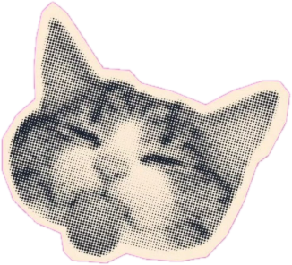
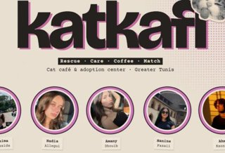

katkafi
Rescue · Care · Coffee · Match
Cat café & adoption center · Greater Tunis
Step inside the café
Our 3D café: meet the cats, turn on the radio
→

Our pitch
The Katkafi plan, as an interactive zine
→